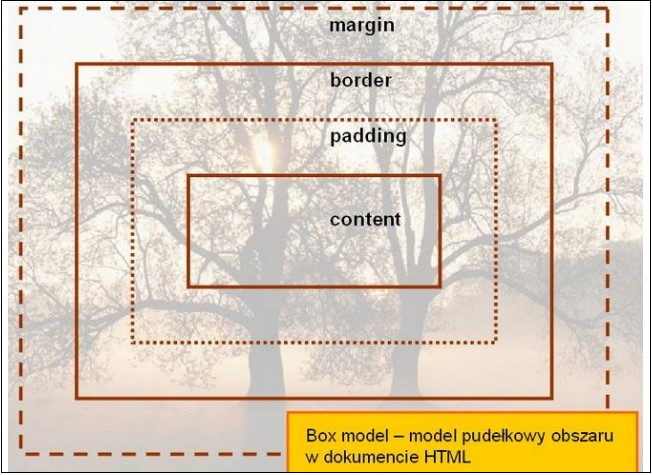
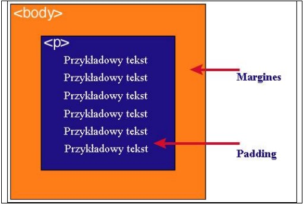

5. Podaj definicję modelu pudełkowego.
Model pudełkowy (ang. box model) to sposób, w jaki przeglądarka internetowa wyświetla elementy HTML. Każdy element traktowany jest jak prostokątne pudełko, które składa się z kilku warstw: zawartości (content), paddingu (marginesu wewnętrznego), obramowania (border) oraz marginesu zewnętrznego (margin).
6. Uzupełnij tabelę:
| Zawartość |
Opis |
| content |
Właściwa zawartość elementu, np. tekst lub obrazek. |
| padding |
Odstęp (margines wewnętrzny) między zawartością a obramowaniem elementu. |
| border |
Obramowanie wokół paddingu i zawartości elementu. |
| margin |
Margines zewnętrzny, czyli odstęp między obramowaniem elementu a innymi elementami. |
7. Podaj dwie uwagi na temat modelu pudełkowego.
- Padding, border i margin mogą mieć zerową wartość.
- Tło elementu jest określone dla wszystkich tych warstw z wyjątkiem marginesów zewnętrznych, które są zawsze przezroczyste.
8. Wstaw grafikę obrazującą model pudełkowy.

Przykładowa grafika przedstawiająca model pudełkowy (box model) w HTML.
9. Wstaw grafikę obrazującą różnicę pomiędzy paddingiem i marginesem wraz z opisem.

Padding to przestrzeń wokół zawartości elementu, wewnątrz obramowania (border). Margin to przestrzeń na zewnątrz obramowania, oddzielająca element od innych elementów.